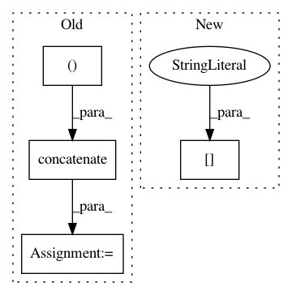

6e289d71866b4782dbe752adce1f26ea895f5dd9,keras/layers/convolutional_recurrent.py,ConvLSTM2D,build,#ConvLSTM2D#Any#,332
Before Change
regularizer=self.bias_regularizer,
constraint=self.bias_constraint)
if self.unit_forget_bias:
self.bias += K.concatenate([K.zeros((self.filters,)),
K.ones((self.filters,)),
K.zeros((self.filters * 2,))])
else:
self.bias = None
self.kernel_i = self.kernel[:, :, :, :self.filters]
After Change
constraint=self.bias_constraint)
if self.unit_forget_bias:
bias_value = np.zeros((self.filters * 4,))
bias_value[self.filters: self.filters * 2] = 1.
K.set_value(self.bias, bias_value)
else:
self.bias = None
In pattern: SUPERPATTERN
Frequency: 3
Non-data size: 4
Instances
Project Name: keras-team/keras
Commit Name: 6e289d71866b4782dbe752adce1f26ea895f5dd9
Time: 2017-03-12
Author: francois.chollet@gmail.com
File Name: keras/layers/convolutional_recurrent.py
Class Name: ConvLSTM2D
Method Name: build
Project Name: NifTK/NiftyNet
Commit Name: 5af1994def9a52fe1ffd2847b2519f1e27cfbc64
Time: 2017-08-12
Author: wenqi.li@ucl.ac.uk
File Name: niftynet/io/misc_io.py
Class Name:
Method Name: do_resampling
Project Name: keras-team/keras
Commit Name: 7374442a1c1507051fb1f9ee1ef774c9a9654d8b
Time: 2017-03-12
Author: francois.chollet@gmail.com
File Name: keras/layers/recurrent.py
Class Name: LSTM
Method Name: build